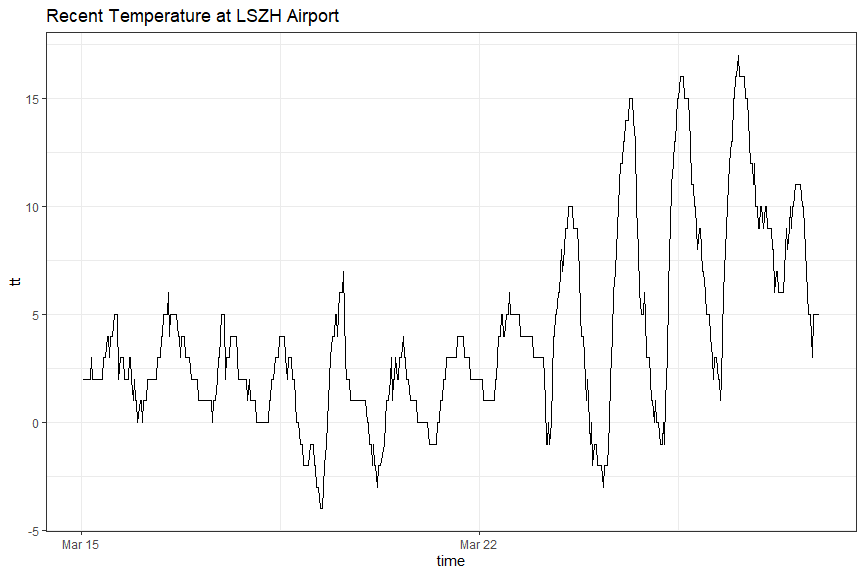
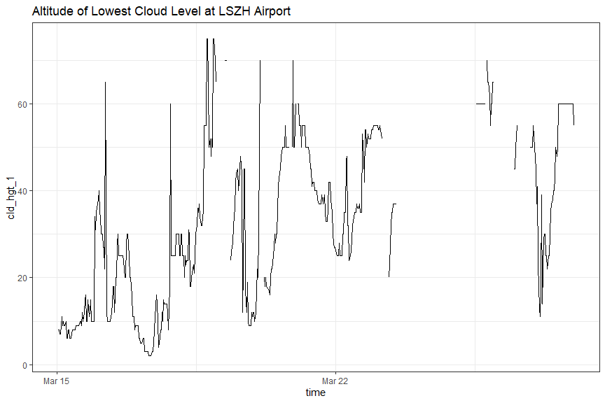
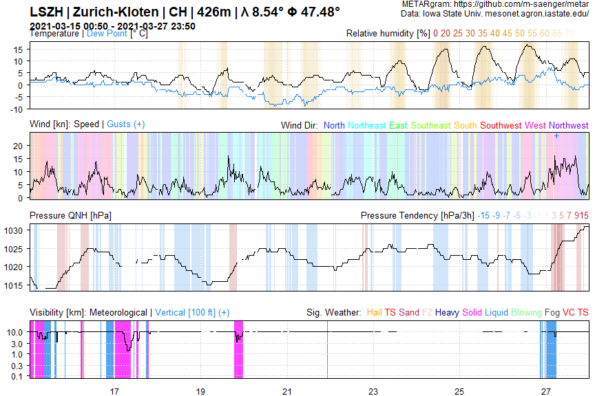

The goal of metar is to provide an R-built parser for METAR reports. Find more information about METAR under https://en.wikipedia.org/wiki/METAR
Install the development version from GitHub with:
# install.packages("devtools")
devtools::install_github("m-saenger/metar", upgrade = "never")Install the latest stable version from GitHub with:
# install.packages("devtools")
devtools::install_github("m-saenger/metar@0.9.0", upgrade = "never")This package depends on data.table, stringr, readr and lubridate.
library(metar)
## read raw data from Mesonet website
dat <- read_metar_mesonet("LSZH", date_start = "2021-03-15", date_end = "2021-03-28")
## parse METAR code
dat.parsed <- parse_metar(x = dat$metar, t = dat$valid)
#> Warning in eval(jsub, SDenv, parent.frame()): NAs introduced by coercion
# Structure (subset of columns)
print(dat.parsed[1:10, .(metar, tt, qnh)])
#> metar
#> 1: LSZH 150050Z 25005KT 220V280 9999 FEW008 BKN012 02/01 Q1017 TEMPO SHSNRA BKN009
#> 2: LSZH 150120Z VRB02KT 9999 FEW008 BKN010 02/01 Q1017 TEMPO SHSNRA BKN009
#> 3: LSZH 150150Z 19003KT 120V230 9999 -SHSNRA FEW007 SCT011 BKN016 02/01 Q1017 RESN TEMPO SHSNRA BKN009
#> 4: LSZH 150220Z VRB03KT 9999 -SHSNRA FEW007 SCT012 BKN017 02/01 Q1016 TEMPO SHSNRA BKN009
#> 5: LSZH 150250Z 21005KT 9999 -SHSNRA FEW011 SCT014 BKN019 02/01 Q1016 RESN TEMPO SHSNRA BKN009
#> 6: LSZH 150320Z 22007KT 9999 -SHSNRA FEW009 SCT015 BKN060 02/01 Q1015 TEMPO SHSNRA BKN009
#> 7: LSZH 150350Z 20006KT 9999 FEW010 BKN013 02/01 Q1015 RESHSNRA TEMPO SHSNRA BKN009
#> 8: LSZH 150420Z 22006KT 9999 -SHSNRA FEW009 SCT012 BKN017 03/01 Q1015 RESN TEMPO SHSNRA BKN009
#> 9: LSZH 150450Z 22007KT 9999 -SHSNRA FEW009 BKN012 02/01 Q1014 TEMPO SHSNRA BKN009
#> 10: LSZH 150520Z 22006KT 180V280 6000 -RASN BKN010 BKN015 02/01 Q1014 RESN TEMPO SHSNRA BKN009
#> tt qnh
#> 1: 2 1017
#> 2: 2 1017
#> 3: 2 1017
#> 4: 2 1016
#> 5: 2 1016
#> 6: 2 1015
#> 7: 2 1015
#> 8: 3 1015
#> 9: 2 1014
#> 10: 2 1014
library(data.table)
# Structure (subset of columns and rows)
print(metar.para[1:10, .(id_para, name_para)])
#> id_para name_para
#> 1: cld Cloud Section
#> 2: cld_amt Cloud Amount
#> 3: cld_octa Cloud Octas
#> 4: cld_hgt Cloud Height
#> 5: cld_hgt_min Cloud Height Minimum
#> 6: cld_hgt_max Cloud Height Maximum
#> 7: cld_type Cloud Type
#> 8: ceiling Ceiling
#> 9: auto AUTO
#> 10: cor Correction
library(ggplot2)
ggplot(dat.parsed, aes(time, tt)) +
geom_path() +
labs(title = "Recent Temperature at LSZH Airport") +
theme_bw()
# Process cloud groups (1-4)
dat.cld <- parse_metar_cld(dat.parsed$cld)
dat.cld$time <- dat.parsed$time
# Structure (subset of columns)
print(dat.cld[1:10, .(time, cld_lay, cld_amt_1, cld_hgt_1, cld_type_1 )])
#> time cld_lay cld_amt_1 cld_hgt_1 cld_type_1
#> 1: 2021-03-15 00:50:00 2 FEW 8 <NA>
#> 2: 2021-03-15 01:20:00 2 FEW 8 <NA>
#> 3: 2021-03-15 01:50:00 3 FEW 7 <NA>
#> 4: 2021-03-15 02:20:00 3 FEW 7 <NA>
#> 5: 2021-03-15 02:50:00 3 FEW 11 <NA>
#> 6: 2021-03-15 03:20:00 3 FEW 9 <NA>
#> 7: 2021-03-15 03:50:00 2 FEW 10 <NA>
#> 8: 2021-03-15 04:20:00 3 FEW 9 <NA>
#> 9: 2021-03-15 04:50:00 2 FEW 9 <NA>
#> 10: 2021-03-15 05:20:00 2 BKN 10 <NA>
ggplot(dat.cld, aes(time, cld_hgt_1)) +
geom_path() +
labs(title = "Altitude of Lowest Cloud Level at LSZH Airport") +
theme_bw()
# Parse present weather group
dat.pw <- dat.parsed[, parse_metar_pw(pw)]
# Structure (subset of columns)
print(dat.pw[1:10, .(pw_grp_1, pw_grp_2, PP_SOLID, PP_LIQUID, sigwx)])
#> pw_grp_1 pw_grp_2 PP_SOLID PP_LIQUID sigwx
#> 1: <NA> <NA> 0 0 NOSIG
#> 2: <NA> <NA> 0 0 NOSIG
#> 3: -SHSNRA <NA> 1 1 PP_SOLID
#> 4: -SHSNRA <NA> 1 1 PP_SOLID
#> 5: -SHSNRA <NA> 1 1 PP_SOLID
#> 6: -SHSNRA <NA> 1 1 PP_SOLID
#> 7: <NA> <NA> 0 0 NOSIG
#> 8: -SHSNRA <NA> 1 1 PP_SOLID
#> 9: -SHSNRA <NA> 1 1 PP_SOLID
#> 10: -RASN <NA> 1 1 PP_SOLID
# Bind data
dat.plot <- cbind(dat.parsed, dat.pw)
plot_metargram(dat = dat.plot)